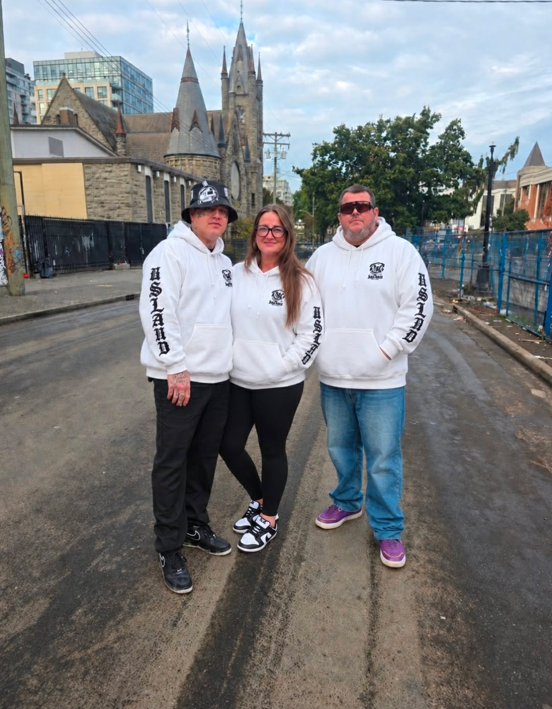
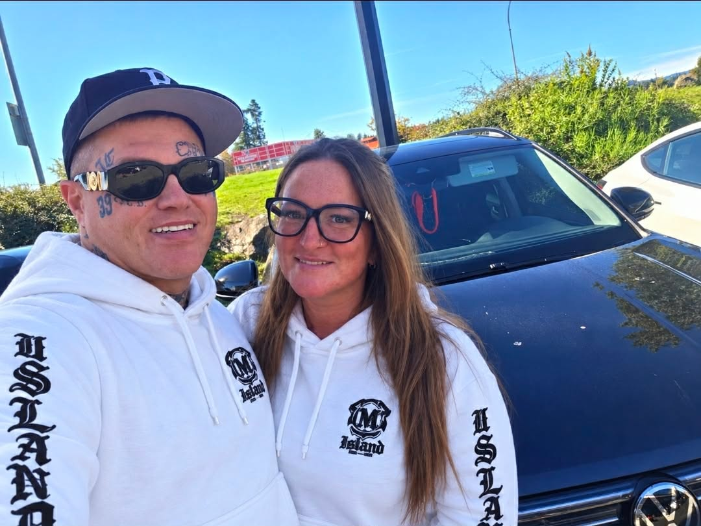

Who We Are
Island Warriors Street Outreach Society (IWSO) is a peer-led, Indigenous-led grassroots nonprofit organization based in Victoria, British Columbia.
We are people with lived experience helping people. Our leadership and outreach are grounded in Indigenous values, culture, community, and the understanding that healing begins with connection.
Many of our team members understand firsthand the realities of addiction, homelessness, incarceration, trauma, poverty, and recovery. We take those lived experiences and turn them into purpose—walking alongside people who may be facing the same struggles we once faced ourselves.
"We believe that lived experience is lived expertise."



Ground-level boots on the street.
Our Approach
Our approach is built around compassion, dignity, respect, cultural connection, and meeting people exactly where they are. We don't look down on people or judge them for where they are in their journey.
"We sit beside them. We listen. We build trust. And when they are ready, we walk with them."